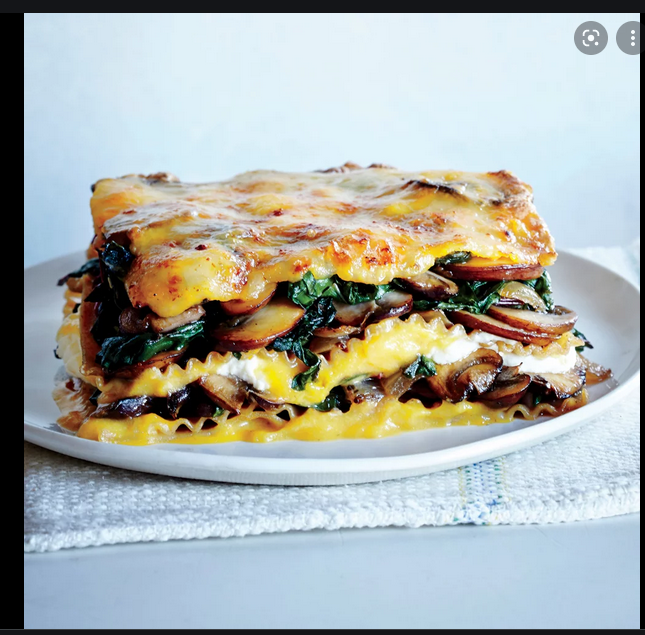

Best Lasagna Ever

my lasagna's off the hook yo!
ingredients:
- feta
- lasagne sheets
- frozen spinach
- tomato sauce
steps:
- cut the feta and frozen spinach into small squares about 2 cm
- layer the feta + spinach in the pan
- layer sheets of lasagna above
- repeat the feta and spinach layer and then the lasagna sheets
- pour tomato sauce over the sheets
- cover w/ foil
- bake @ 180 C for about 30 minutes